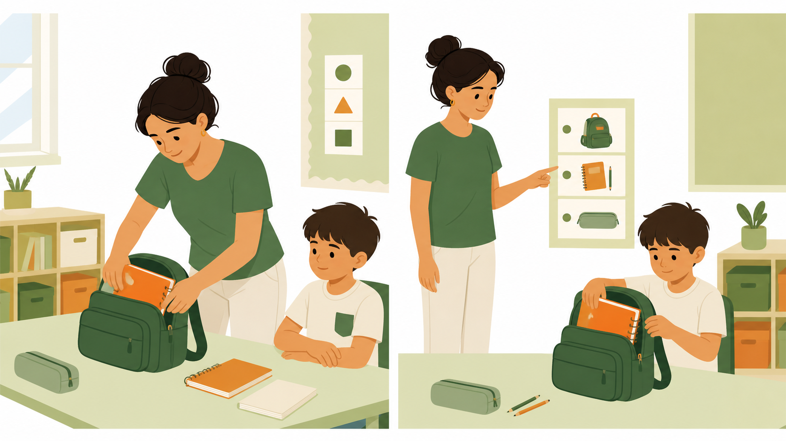
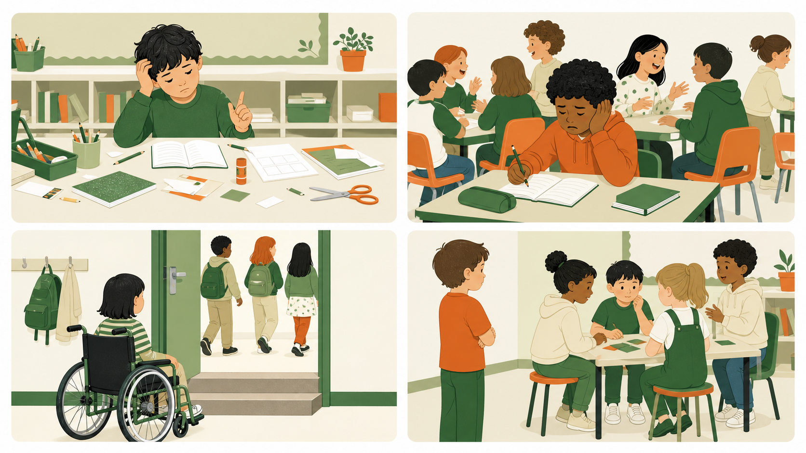

סדנת פתיחת שנה
חוזרות לראות מחדש
מהתבוננות לתיווך, ומהתיווך להכלה
שיעור אחד. שאלה אחת. מבט מקצועי חדש.
קורס תומכות חינוך
שאלת המפגש
האם עזרה יכולה להחליש?
חשבו על רגע שבו כוונה טובה לא יצרה את התוצאה שקיווינו לה.
לא מחפשות תשובה מהירה
Problem · Promise · Plan
למה נפגשות — ומה ייצא לנו מזה?
הבעיה
הלחץ להספיק גורם לנו לפעמים לעשות במקום הילד.
ההבטחה
נלמד לזהות חסם ולבחור תמיכה שמקדמת השתתפות ועצמאות.
המסלול
ניסיון אישי ← מקרה ← סתירה ← כלי ← ניסוי קטן.
פתיחה בזוגות · 4 דקות
בחרי רגע אחד מהקיץ שבו עזרת למישהו — או שמישהו עזר לך.
מה קרה בפועל? מה הפך את העזרה למועילה?
שאלת עיבוד
מה העזרה אפשרה —
ומה אולי עשתה במקומי?
ומה אולי עשתה במקומי?
התבוננות לפני פרשנות

מה אתן רואות בכל צד — בלי להסביר עדיין למה זה קורה?
באיזה צד ניתנה יותר עזרה?
מהירות
רוגע
הצלחה עכשיו
יכולת לעתיד
מקרה מן השטח
המקרה של נועה
נועה מתעכבת בכל בוקר בסידור התיק. כדי שהכיתה לא תאחר, התומכת מסדרת עבורה. נועה נכנסת רגועה והכול מוכן — אבל גם אחרי חודש היא עדיין אינה מסדרת את התיק בעצמה.
שרשרת גילוי
חמש שאלות לפני פתרון
- האם נועה קיבלה עזרה? באיזה מובן?
- איזו בעיה נפתרה מיד?
- איזו בעיה נשארה — או נוצרה?
- מה אפשר לשנות בלי לנטוש את נועה?
- איך נדע שהשינוי באמת עוזר?
הסתירה
לפתור עכשיו
להרגיע, למנוע איחור, להשלים משימה, לשמור על רצף הכיתה.
לבנות לעתיד
לאפשר ניסיון, ללמד שלבים, ליצור רמזים ולהפחית תמיכה בהדרגה.
האתגר המקצועי הוא לא לבחור צד — אלא לחבר ביניהם.
רגע הגילוי
איכות התמיכה אינה נמדדת בכמה עשיתי, אלא במה שהילד מסוגל לעשות יותר בזכותי — ובהמשך גם בלעדיי.
שם מקצועי לרעיון שכבר גילינו
תיווך ופיגומים
תמיכה זמנית ומדויקת באזור שבו הילד עדיין אינו מצליח לבדו — אך יכול להצליח בעזרת מבוגר, רמז, כלי או התאמה.
המבחן: האם אפשר להפחית את התמיכה עם הזמן?
מתחילים בפחות — עולים לפי הצורך
סולם תמיכה שניתן להפחית
1. המתנה והתבוננות
2. רמז בסביבה
3. רמז חזותי
4. שאלה מכוונת
5. הדגמה
6. סיוע חלקי
7. סיוע מלא בעת צורך
הפסקה
15 דקות · חוזרות בזמן עם מקרה אחד בראש
ארבעה מצבים · ארבע השערות
איפה נמצא החסם?

מודל להתבוננות
לא מחפשות אשמה. מחפשות נקודת שינוי.
הילד/ה
המשימה
הסביבה
התמיכה
מה אפשר לשנות לפני שעושים במקום הילד?
מעבדת מקרה · 25 דקות
מתיאור עובדתי לניסוי קטן
מה ראינו?←מה הילד מנסה?←מה העזרה עושה?←מה ננסה?
בלי פרטים מזהים · שינוי אחד · שבוע אחד
לפני שמתחילים — מחליטים מה נבדוק
מה יהיה סימן להתקדמות?
יותר יוזמה
יותר שלבים עצמאיים
יותר השתתפות
פחות זמן או פחות תלות
המצפן המקצועי שלי
כיוון שאפשר לבדוק במציאות
לראות←לבדוק←להסיר חסם←לנסות←להעריך
השנה אני רוצה לראות יותר…
המשפט שניקח איתנו
לא לעזור פחות —
לעזור כך שנצטרך פחות.
לעזור כך שנצטרך פחות.
מה אנסה בשבוע הראשון — ואיך אדע שזה עוזר?